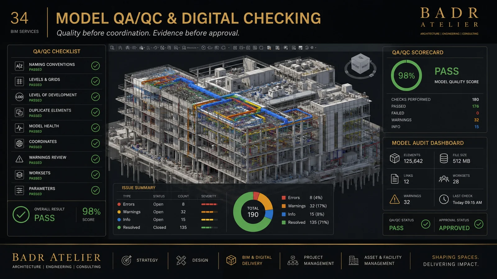
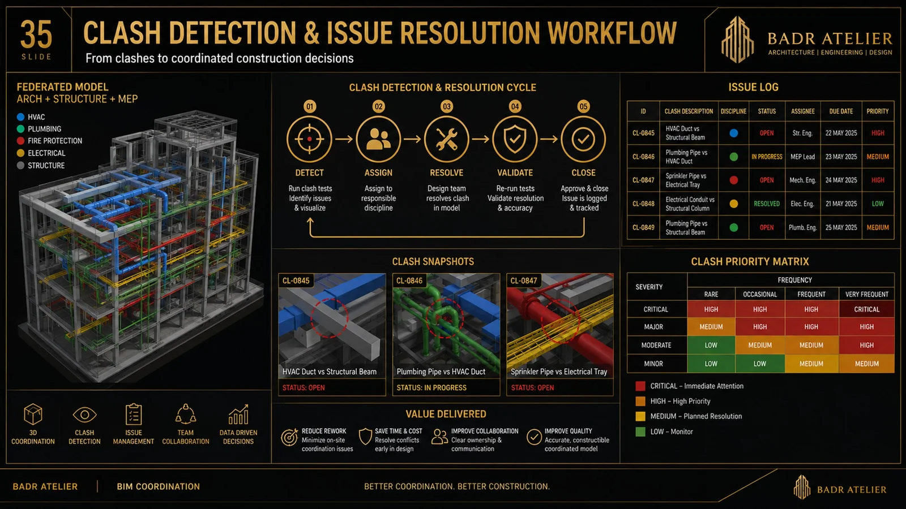
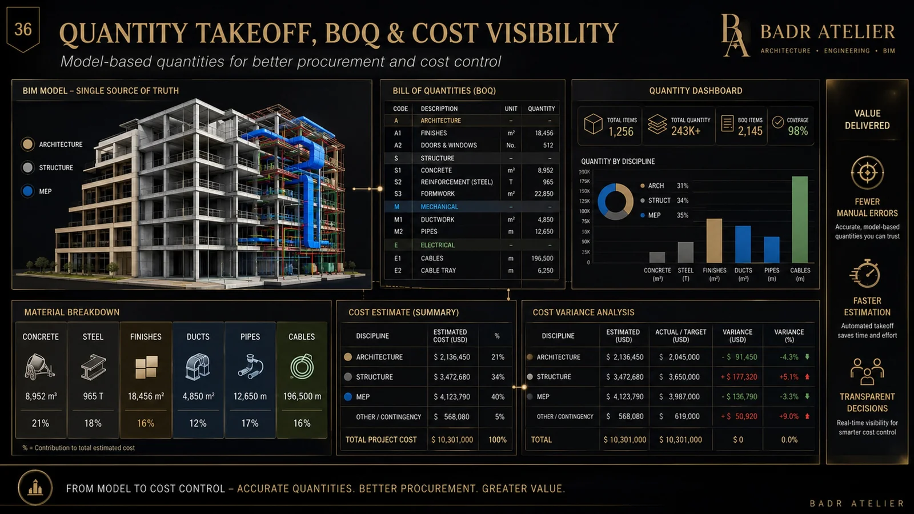
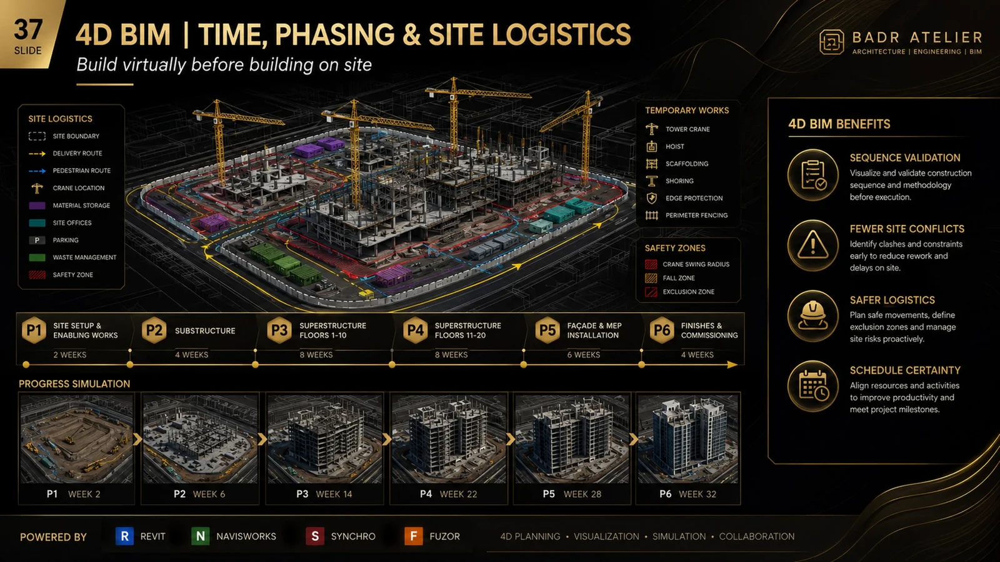
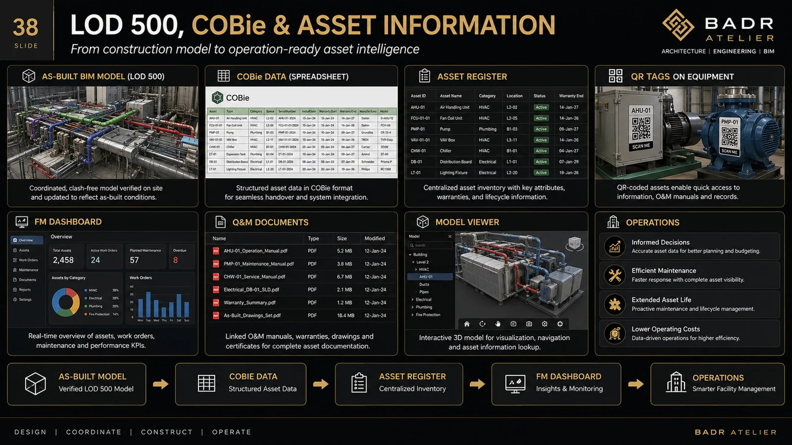

01 / MODEL⬡
3D BIM Modeling
Revit ARCH / STR / MEP models with controlled geometry and information.
BADR's BIM portfolio covers Architecture + Structure + MEP and digital delivery.

The BIM portfolio positions the model as a decision environment.
Revit ARCH / STR / MEP models with controlled geometry and information.
From concept massing through coordinated construction and asset information.
Federated models, clash testing, issue tracking and resolution workflows.
Plans, sections, details, schedules and coordinated documentation.
Model-based quantities, schedules and procurement visibility.
Sequencing, logistics, cost intelligence, COBie and FM-ready data.
The BIM portfolio applies the workflow to architectural project families.


Connected digital controls improve project certainty.




